Im Programmbereich
1 WinLine PPS
1 Produktion
1 Arbeitsschrittstatus
wird nach Eingabe der PPS-Auftragsnummer bzw. der Arbeitsschrittnummer angezeigt, wie viele Stück für diesen Arbeitsschritt zu produzieren sind. Auch kann hier der Druckstatus des Material- und Arbeitsscheins verändert werden.
Hinweis
Der Aufruf des Fenster "Arbeitsschrittstatus" ist auch über den Leitstand möglich (Doppelklick auf die Spalte "Belegstatus" oder Anwahl des Buttons "Arbeitsschrittstatus"), wobei dann bereits die Auftragsnummer und der Arbeitsschritt vorbelegt ist.
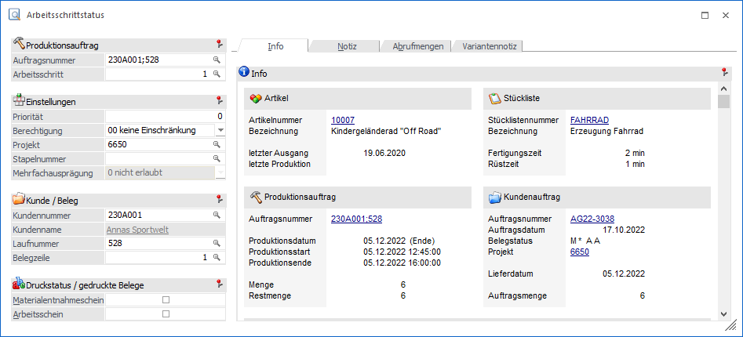
Folgende Eingabefelder, Einstellungen und Informationen stehen im Arbeitsschrittstatus zur Verfügung:
Produktionsauftrag
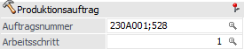
Ø Auftragsnummer
An dieser Stelle erfolgt die Eingabe der Produktionsauftragsnummer.
Ø Arbeitsschritt
Handelt es sich um einen Auftrag mit mehreren Arbeitsschritten, so kann hier der gewünschte Arbeitsschritt gewählt werden.
Einstellungen
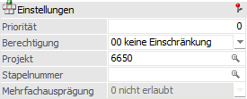
Ø Priorität
Hier wird die bei der Auftragsanlage vergebene Priorität angezeigt und kann ggfs. noch verändert werden.
Ø Berechtigung
Hier wird die Berechtigung für den Arbeitsschritt angezeigt und kann verändert werden.
Hinweis
Benutzern des Typs "Administrator" oder mit der Administratorenberechtigung "Benutzeradministrator" steht in der Auswahlbox der Punkt ">> Neues Profil" zur Verfügung. Über die Anwahl dieses Eintrags kann in der Folge ein neues Berechtigungsprofil angelegt werden.
Ø Stapelnummer
An dieser Stelle ist die Stapelnummer ersichtlich und kann angepasst werden.
Hinweis
Handelt es sich um einen Produktionsauftrag mit mehreren Arbeitsschritten, so wird die Stapelnummer bei Änderung in Arbeitsschritt 1 automatisch in allen weiteren Arbeitsschritte übertragen.
Ø Mehrfachausprägung
Hier wird angezeigt, ob es möglich ist, ein Stücklistenteil bzw. -komponente auf mehr wie eine Ausprägung aufzuteilen, d.h. ob die erforderliche Menge für ein Stücklistenteil (Artikel mit Chargenverwaltung) auf mehrere Chargen aufgeteilt werden darf oder nicht. Standardmäßig ist das Feld inaktiv, d.h. ein Infofeld.
Hinweis
Die Einstellung wird aus dem Stücklistenstamm (Register „Zusatz") für den jeweiligen Arbeitsschritt des Produktionsauftrags vererbt. Mit einem Eintrag in der mesonic.ini, kann das Feld für die Eingabe aktiviert werden, und die zwei Optionen: "0 nicht erlaubt" und "1 erlaubt" stehen zur Auswahl für den jeweiligen Arbeitsschritt (siehe Dokument "White Paper - MESONIC.INI-Einstellungen").
Kunde / Beleg
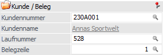
Stammt der Produktionsauftrag aus der WinLine FAKT, so sind hier die Verknüpfungen sichtbar bzw. können einem Produktionsauftrag auch nachträglich einem Beleg zugeordnet werden.
Ø Kundennummer
Hier erfolgt die Anzeige der Kundennummer von welcher der Auftrag stammt.
Ø Kundenname
An dieser Stelle wird der Kundenname angezeigt.
Ø Laufnummer
Anzeige bzw. Eingabe der Laufnummer des FAKT-Belegs, in welchem der Produktionsartikel enthalten ist.
Ø Belegzeile
Anzeige bzw. Eingabe der Belegzeile aus dem FAKT-Beleg.
Druckstatus / gedruckte Belege
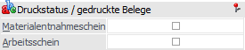
Ø Materialentnahmeschein / Arbeitsschein
Hier kann der Druckstatus des Material- und Arbeitsscheines verändert werden. Werden die Häkchen gesetzt, so bedeutet dieses, dass der jeweilige Schein bereits gedruckt wurde. Werden gesetzte Haken entfernt, so wird auch der Druckstatus auf "nicht gedruckt" zurückgestellt.
Fremdfertigung
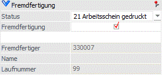
Wenn der Arbeitsschritt vom Typ "2 - Fremdfertigung" angelegt wurde, werden in diesem Bereich Informationen zur Fremdfertigung angezeigt.
Ø Status
In diesem Feld wird der aktuelle Fremdfertigungsstatus angezeigt.
Ø Fremdfertigung
Mit der Checkbox kann die Fremdfertigung für den Arbeitsschritt deaktiviert werden.
Achtung
Dieser Schritt kann für den Arbeitsschritt nicht mehr rückgängig gemacht werden. Sobald der Arbeitsschritt nicht mehr für die Fremdfertigung vorgesehen ist, kann er nicht mehr im Fenster "Fremdfertigung" bearbeitet werden.
Ø Fremdfertiger
Die Kontonummer des Fremdfertigers ist in diesem Infofeld angezeigt, nachdem eine Bestellung für den Arbeitsschritt erzeugt wurde.
Ø Laufnummer
Die Beleg-Laufnummer von der Bestellung für den Arbeitsschritt wird in diesem Infofeld angezeigt, nachdem eine Bestellung für den Arbeitsschritt erzeugt wurde.
Register "Info"
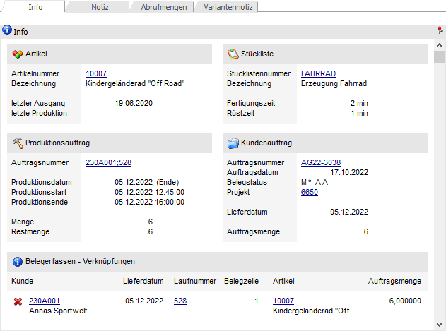
In dem Register "Info" werden die wichtigsten Daten des Produktionsauftrags und dem ggfs. vorhandenen FAKT-Beleg angezeigt. Sollten in der Produktionsvorbereitung dem Auftrag Dokumente per Drag & Drop hinzugefügt worden sein, so wird das Icon dargestellt, wobei dieses mit einem DrillDown versehen ist (d.h. per Mausklick können die Dokumente angezeigt werden).
Hinweis
Handelt es sich um einen Produktionsauftrag mit FAKT-Verknüpfung, so kann es zu unterschieden zwischen "Produktionsmenge ó Auftragsmenge" und / oder "Produktionsdatum ó Lieferdatum" kommen. In solchen Fällen wird neben "Lieferdatum" bzw. "Auftragsmenge" der aktuelle Status angezeigt:
ü - Belegunterschied akzeptiert
Es sind
Belegunterschiede vorhanden. Diese wurden durch Anwahl des Buttons
"Belegunterschiede ignorieren" akzeptiert.
ü - Belegunterschied vorhanden
Es sind
Belegunterschiede vorhanden. Diese können durch Anwahl des Buttons
"Belegunterschiede ignorieren" akzeptiert oder mit Hilfe der Buttons
"Lieferdatum als Produktionsauftragsdatum übernehmen" bzw. "Liefermenge als
Produktionsmenge übernehmen" korrigiert werden.
Register "Notiz"
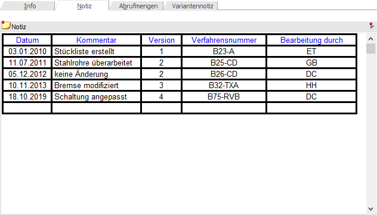
Die Notiz, welche bei der Anlage des Produktionsauftrags erfasst werden kann, wird in dem Register "Notiz" angezeigt und kann editiert werden.
Register "Abrufmengen"
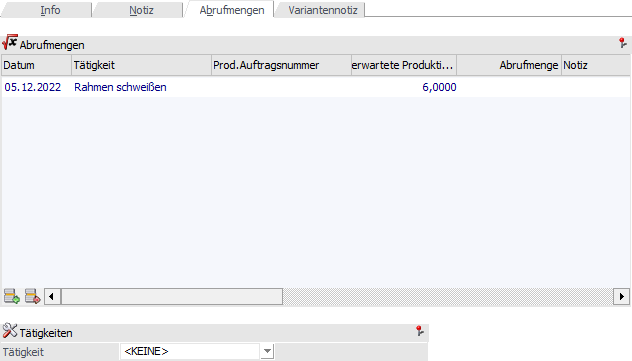
In diesem Register werden die Mengen, welcher noch produziert werden, angezeigt (d.h. die SOLL-Mengen). Zusätzlich zu diesen Soll-Mengen kann man zukünftig (wird noch nicht unterstützt) auch die gewünschte Abruf-Menge eingeben.
Beispiel
Ein Kunde hat 10 Fahrräder bestellt, wobei diese bis Freitag fertig sein sollen. Der Kunde möchte aber schon ein Fahrrad vorab am Dienstag für eine Präsentation abholen. Diese Abruf-Menge (von einem Stück am Dienstag) kann man nun hier in der Tabelle eintragen. Das Programm rechnet in jeder Zeile aus, ob die erforderliche Menge an dem Tag verfügbar ist oder nicht.
Register "Variantentexte"
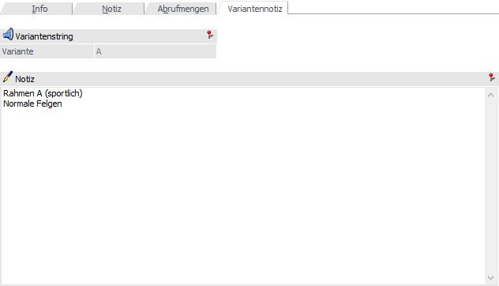
In diesem Register können die Variantentexte eines Arbeitsschrittes auf zwei Weisen bearbeitet werden:
ü Manuelles Bearbeiten
Der
Variantentext, welcher bei der Anlage des Produktionsauftrages gemäß der
Einstellungen in den PPS-Parametern geschrieben wurde, kann im Notizfeld
editiert und mit Button "Ok" gespeichert werden.
ü Button "Variantentext
erzeugen"
Mit diesem Button kann der Variantentext gemäß der Einstellungen in
den PPS-Parametern erneut erstellt und eingefügt werden.
Buttons
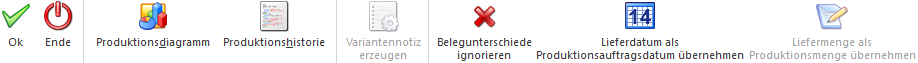
Ø Ok
Durch Anwahl des Buttons "Ok" bzw. der Taste F5 werden alle getätigten Eingaben bzw. Veränderungen gespeichert.
Ø Ende
Mit Hilfe des Buttons "Ende" bzw. der Taste ESC wird der Programmbereich verlassen und alle nicht gespeicherten Eingaben verworfen.
Ø Produktionsdiagramm
Es werden die Zeiten der Tätigkeiten in einem Diagramm dargestellt. Die Symbole und kennzeichnen hierbei Tätigkeitszeiten, die erledigt sind oder nicht (siehe IST-Zeitenerfassung, Register "Produktionsauftrag", Status "abgeschlossen").
Hinweis
Gibt es bei einem Produktionsauftrag mehr wie 10 Tätigkeiten, dann werden die Zeiten aber der 10. Tätigkeit kumuliert unter dem Begriff "Rest" dargestellt. Damit man auf Anhieb erkennt, welche Tätigkeiten kumuliert dargestellt werden, erhalten diese ein grünes Häkchen in der Spalte "Zeiten im Bereich "Rest"".
Ø Produktionshistorie
Wurde der Arbeitsschritt abgeschlossen, so kann durch Anwahl dieses Buttons eine Historie über die (Teil-) Endmeldungen ausgegeben werden.
Ø Variantennotiz erzeugen
Wenn dieser Button angeklickt wird, wird der Variantentext für den Arbeitsschritt gemäß der Einstellungen in den PPS-Parametern erneut wiederhergestellt.
Ø Belegunterschiede ignorieren
Handelt es sich um einen Produktionsauftrag mit FAKT-Verknüpfung, so wird bei einem Unterschied von "Produktionsmenge ó Auftragsmenge" und / oder "Produktionsdatum ó Lieferdatum" der Button "Belegunterschiede ignorieren" zur Verfügung gestellt (aktiviert).
Durch Anwahl des Buttons werden die Unterschiede akzeptiert und im Register "Info" das Icon durch ersetzt (zu sehen neben den Informationen "Lieferdatum" bzw. "Auftragsmenge").
Hinweis
Wurde der Arbeitsschrittstatus über den Leitstand geöffnet, so wird das Fenster nach Anwahl des Buttons automatisch geschlossen und der Leitstand aktualisiert.
Ø Lieferdatum als Produktionsauftragsdatum übernehmen
Handelt es sich um einen Produktionsauftrag mit FAKT-Verknüpfung, so wird bei einem Unterschied von "Produktionsdatum ó Lieferdatum" der Button "Lieferdatum als Produktionsauftragsdatum übernehmen" zur Verfügung gestellt (aktiviert).
Durch Anwahl des Buttons wird das Fenster "Arbeitsschrittstatus "geschlossen, der Leitstand geöffnet und das aktuelle Lieferdatum in die Spalte "Datum" übergeben.
Achtung
Es findet kein automatisches aus- und einplanen statt. Dieses muss im Leitstand durch Anwahl des Buttons "Speichern + Tätigkeiten einplanen" ausgelöst werden.
Ø Liefermenge als Produktionsmenge übernehmen
Handelt es sich um einen Produktionsauftrag mit FAKT-Verknüpfung, so wird bei einem Unterschied von "Produktionsmenge ó Auftragsmenge" der Button "Liefermenge als Produktionsmenge übernehmen" zur Verfügung gestellt (aktiviert).
Durch Anwahl des Buttons wird das Fenster "Arbeitsschrittstatus" geschlossen, die Produktionsmenge im Produktionsauftrag direkt geändert und der Bedarf der Komponenten neu ermittelt.
Achtung
Die Änderung der Produktionsmenge wird nach dem Bestätigen einer Sicherheitsabfrage unmittelbar vorgenommen. Hierbei findet kein automatisches aus- und einplanen statt, was in der Regel bei Änderung der zu produzierenden Menge notwendig ist (d.h. dieses muss im Leitstand selber vorgenommen werden).
Hinweis
Die vorigen 3 Buttons stehen nicht zur Verfügung, wenn die Hauptartikelnummer des Produktionsartikels nicht dieselbe wie die Hauptartikelnummer des Auftragsartikels (in der Belegzeile) ist, z.B. wenn die Hauptartikelnummer in der Auftragszeile auf eine andere Artikelnummer nachträglich geändert wurde.